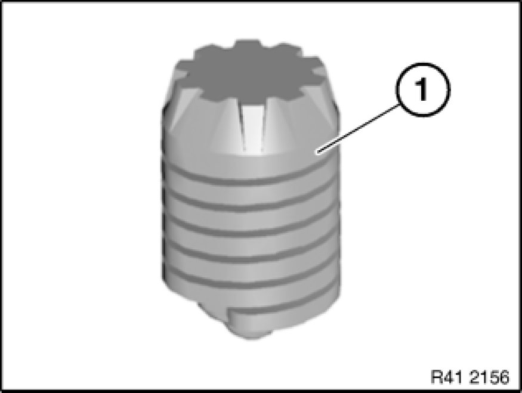
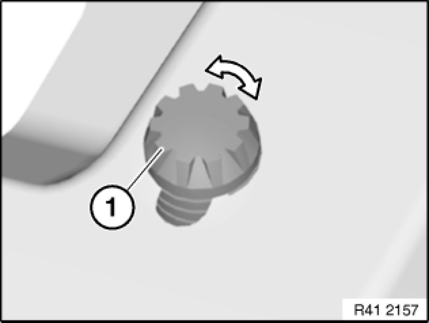
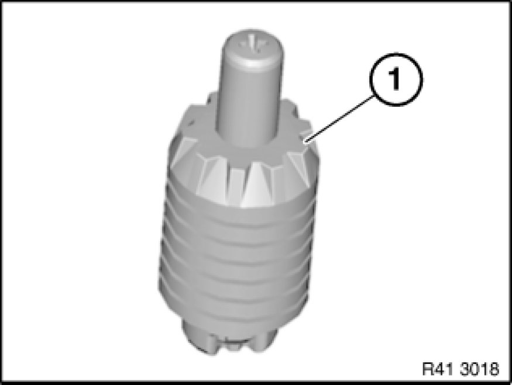
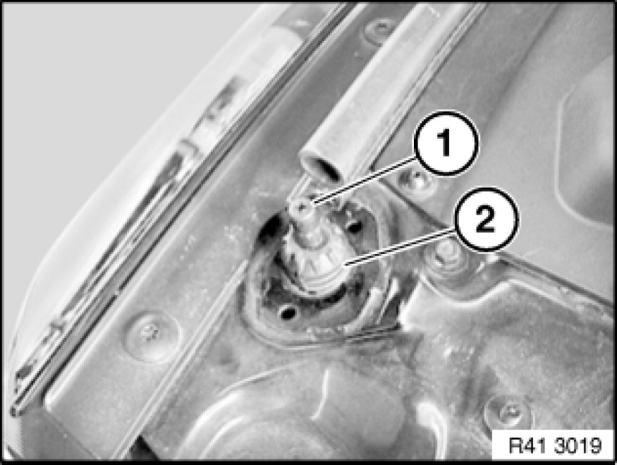
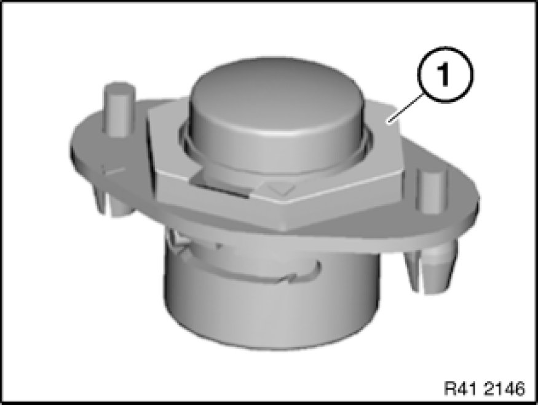
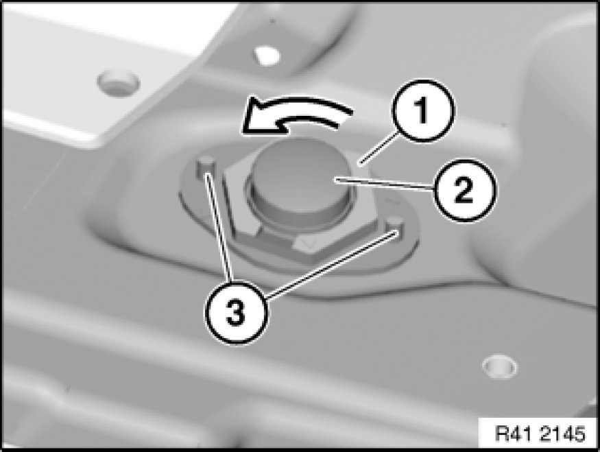

Hood Stop: Adjustments
51 23 ... - Adjusting/replacing bump stops

The illustrations are schematic representations and are to be applied to the relevant vehicle type.

Version 1:
Following parts must not be damaged:
- (1) Bump stop

Adjust bump stop (1) to correct height by turning left or right.

Version 2:
Replace damaged bump stops (refer to EPC):
- (1) Bump stop with ejector

Press ejector (1) into bump stop and, in this position, twist approx. 90° counterclockwise with a Phillips screwdriver.
This locks the ejectors (1) in the bump stops.
Adjust bump stop (2) to correct height by turning left or right.
Unlock the ejector (1) again after completing adjustment.

Version 3:
Replace damaged bump stops (refer to EPC):
- (1) Bump stop

Turn lock (1) 45° counterclockwise.
Pull bump stop (2) upwards.
Close lid slowly until it is at the same height as the side panel.
Open lid and turn lock (1) clockwise.
Installation:
Press bump stop into panel and drive in expanding pins (3).